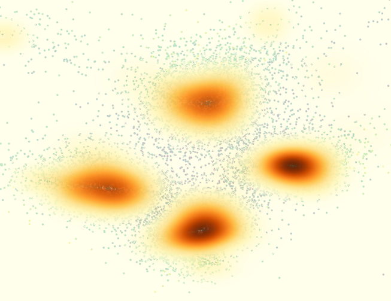

otCEISVAE documentation¶
{kind=link}

otCEISVAE is an OpenTURNS module implementing an algorithm to carry out reliability analysis for high-dimensional problem based on Cross-Entropy Importance Sampling using Variational AutoEncoder. This work is an adaptation to the OpenTURNS framework of the Ph.D. thesis work of Julien Demange-Chryst and of an existing Python implementation It allows to use classical OpenTURNS reliability analysis problem implementations
The implementation of the Variational AutoEncoder relies on Tensorflow (CPU version >=2.19), Tensorflow-Probability (version >=0.25), Keras (version >=3.10) and tf_keras (version>=2.19). Moreover, the problem associated to the reliability analysis is implemented using OpenTURNS (version >=1.25).
The corresponding paper is “Demange-Chryst, J., Bachoc, F., Morio, J., & Krauth, T. Variational autoencoder with weighted samples for high-dimensional non-parametric adaptive importance sampling. Transactions on Machine Learning Research.”
Theory¶
User documentation¶
Examples¶
References¶
Demange-Chryst, J., Bachoc, F., Morio, J., & Krauth, T. Variational autoencoder with weighted samples for high-dimensional non-parametric adaptive importance sampling. Transactions on Machine Learning Research.